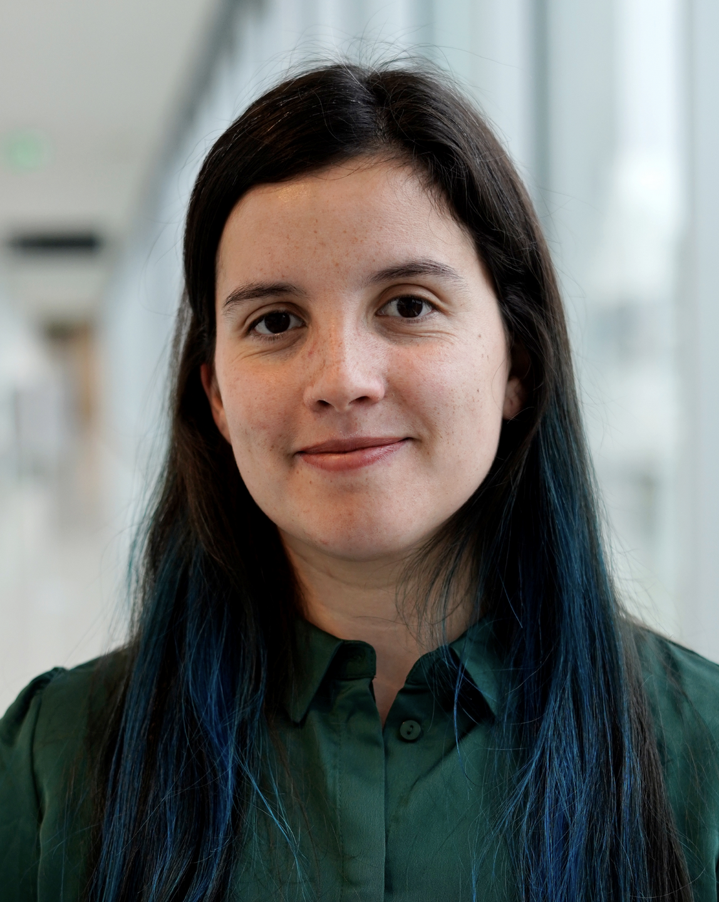
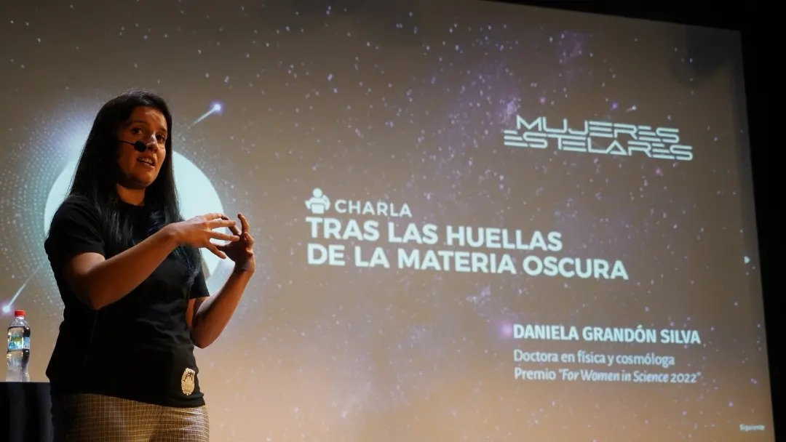
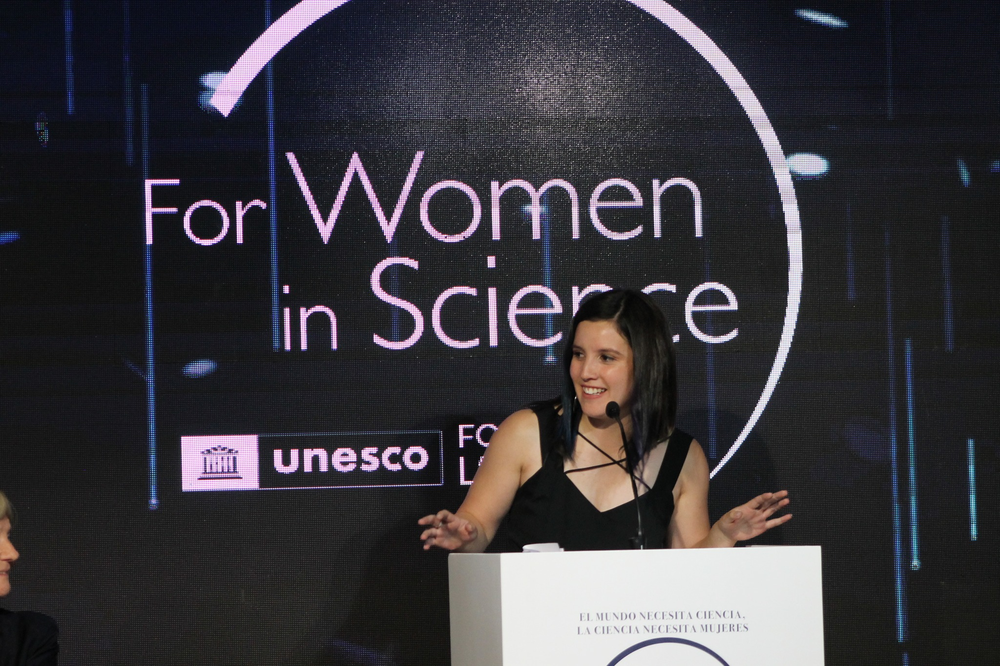
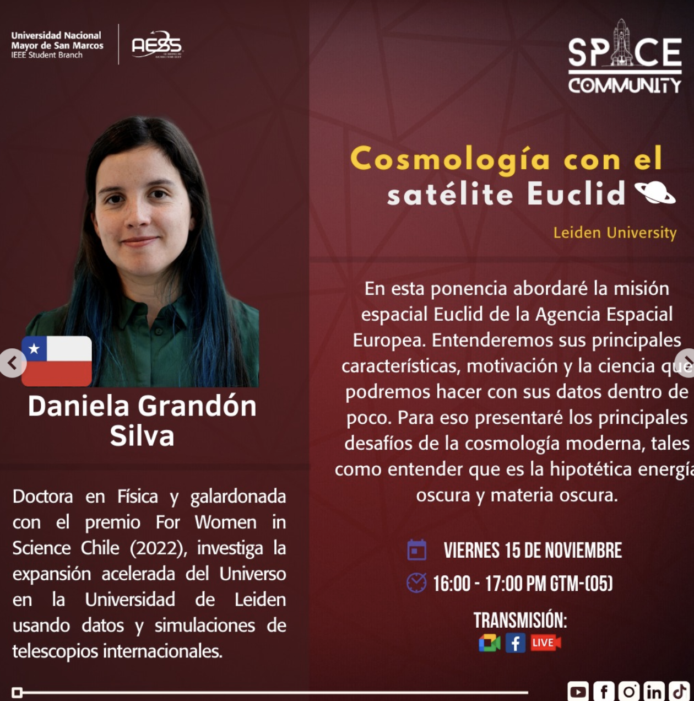
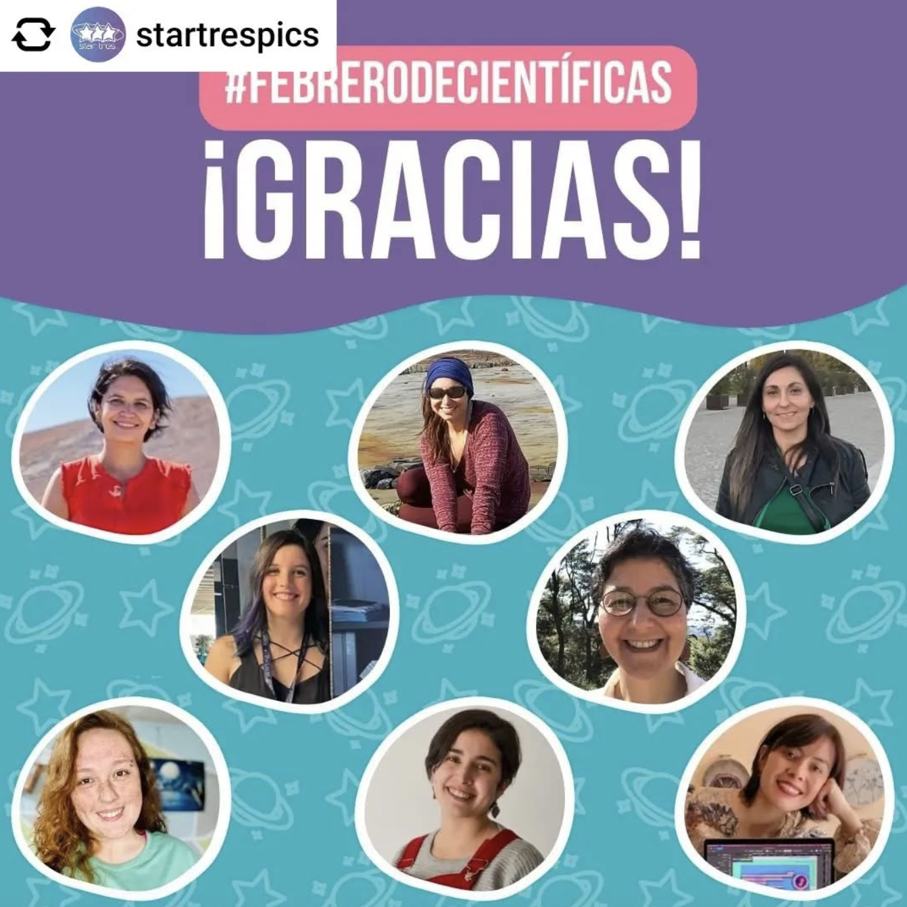
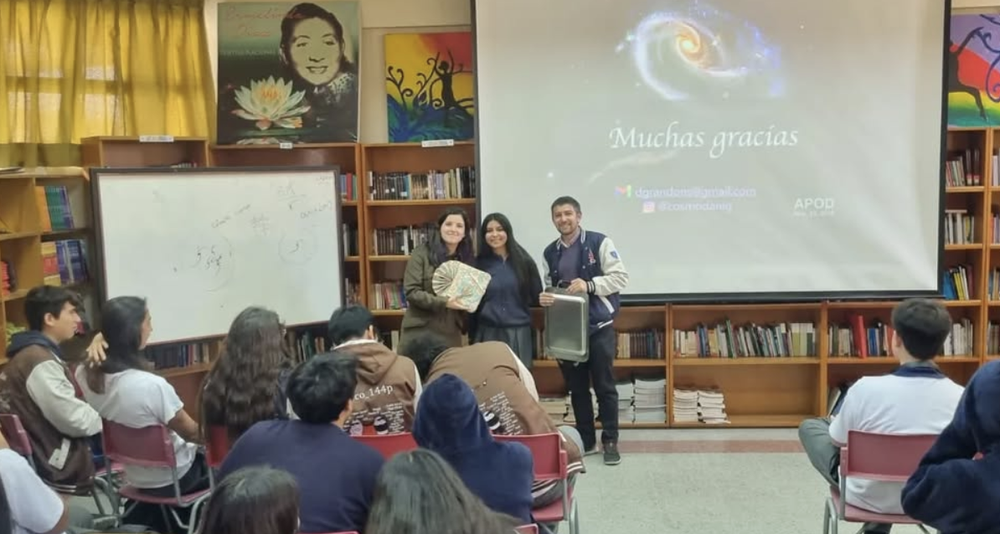

I am a physicist specializing in the intersection of theoretical cosmology and data science. My research focuses on the statistical analysis of non-Gaussian cosmic fields and the development of robust Bayesian frameworks and machine learning methods for cosmological inference. My final goal is to elucidate fundamental physics about the Universe, such as the nature of dark energy, dark matter and inflation. I utilize real data from galaxy cataloges, and state-of-the-art cosmological simulations. I co-lead the Higher Order Statistics Topical Team within LSST-DESC, and co-lead the Data Release 1 Euclid cosmological analysis using weak lensing higher-order statistics. I am also a timezone representative of the International Astrostatistics Association, among other leadship roles. In 2022, I was honored with the L'Oréal-UNESCO "For Women in Science" Prize in Chile.

Bio
I hold a PhD in Physics from the Universidad de Chile, where my work focused on novel statistical approaches and machine learning techniques to analyzing the weak lensing field and constraining dark energy models. During my PhD I spent 3 months as a visiting researcher at Kavli IPMU, Japan. Prior to my PhD, I obtained my undergraduate degree in Physics at Instituto de Física y Astronomía (UV) in the beautiful city of Valparaíso, a UNESCO World Heritage site. My research mostly focused on stellar astrophysics and theoretical cosmology. Currently I am a postdoc at the Mathematical Institute of Leiden University in Dr. Elena Sellentin's group. My research focuses on Bayesian frameworks to mitigate the impact of systematics on cosmological probes, to leverage the constraining power of Stage IV cosmological surveys.
Research
Find my publications in ORCID, ADS
I actively contribute to international collaborations, including:
- Vera Rubin Observatory LSST Dark Energy Science Collaboration
Co-lead of the Higher-Order Statistics topical team - ESA's Euclid consortium
Co-lead of the Data Release 1 Cosmological analysis using Higher-Order Statistics - International Astrostatistics Association
Time-zone representative for North and South America. - CosmoVerse Action (European Cooperation in Science and Technology project)
Co-lead of the Reconstructions in Cosmology and Weak Lensing sections, CosmoVerse Whitepaper - Higher-Order Statistics with Subaru Hyper Suprime-Cam (HSC) Weak Lensing Collaboration
Link to publications.
Mentoring
Below is a list of students I have supervised:
- Vicente Pedreros (MSc Physics, Universidad de Chile, 2025–Present)
- Zeynab Ashuri (PhD candidate, Leiden University, 2024–Present)
- Constanza Espinoza (BSc Physics, Universidad de Chile, 2023)
- Vicente Pedreros (BSc Physics, Universidad de Chile, 2023)
- Juan Pablo Brandt (BSc Physics, Universidad de Chile, 2022)
- Gerald Barnert (BSc Physics, Universidad de Chile, 2021)
Teaching
Lecturer
- Essentials for Data Science (MSc Statistics and Data Science, Leiden University & LUMC, 2025)
- Modern Astrostatistics (MSc Physics & Astronomy, Leiden University, 2024 & 2025)
Invited Lecturer
- Bayesian Inference (Data Analysis Course, MSc & PhD in Physics, PUCV, 2024)
- Machine Learning for cosmology (BSc Physics, Congreso Iberoamericano de Física, 2022)
- Bayesian Inference in Cosmology (Cosmology Course, MSc & PhD in Physics, Universidad de Chile, 2022)
Teaching Assistant
- La Serena School for Data Science (AURA, 2021 & 2022) >Projects: 1) Deep Learning Identification of Galaxy Hosts of Transients 2) Lymphoma Classification
- Cosmology (MSc & PhD in Physics, Universidad de Chile, 2020)
- Electromagnetism (BSc in Physics, Universidad de Chile, 2022)
- Introduction to Physics, Calculus, Waves & Optics, Computational Physics (BSc in Physics, Universidad de Valparaíso, 2015–2017)
Certification
Introduction to University Teaching (54 hours)– Universidad de Chile (2021)
Talks
- Euclid Consortium Annual Meeting – Leiden, Netherlands (03/2025)
- Cosmology on the Steep Rise – Sexten Center for Astrophysics, Italy (02/2025)
- Invited seminar: Instituto de Física y Astronomía – Universidad de Valparaíso, Chile (12/2024)
- Invited seminar: Grupo de Cosmología y Gravitación – Universidad Nacional Autónoma de México (12/2024)
- Sociedad Chilena de Astronomía XIX Meeting – Universidad de Tarapacá, Chile (11/2024) -- Chair of the Astrostatistics session
- Departamento de Física – Universidad de Chile (11/2024)
- Invited colloquium: Instituto de Física – Pontificia Universidad Católica de Valparaíso (11/2024)
- CosmoVerse Annual Conference – Krakow, Poland (07/2024)
- COSMO21: Statistical Challenges in 21st Century Cosmology – Chania, Greece (05/2024)
- 1st Online Conference for Women in Theoretical Physics from LATAM (03/2024)
- Invited seminar: Kavli IPMU – University of Tokyo, Japan (05/2023)
- Cosmology Journal Club – Imperial College London (10/2023)
- Conference FCFM – Universidad de Chile (08/2022) 🏆 Awarded 2nd best talk
- Cosmology Journal Club – RWTH Aachen University (06/2022)
- AstroML Journal Club – Royal Observatory, Edinburgh (06/2022)
- Invited talk: Weak lensing beyond 2 point conference, Kyoto University
- Lensing Journal Club – Leiden University (05/2022)
- Cosmology Journal Club – Utrecht University (05/2022)
- Invited seminar: ACAI Theory Group – Ludwig Maximilian University of Munich (07/2021)
- Invited talk: 1st International Meeting on Theoretical and Applied Physics – Callao, Peru (05/2021)
Outreach
Beyond research, I am an advocate for diversity in STEM, actively mentoring young researchers and promoting scientific outreach. I'm a mentor in the Supernova Foundation, a mentoring program for women in physics. I'm also a mentor in the Academia Into Space, the first free and online academia in astronomy in Latin America.
Despite living abroad, I organize in-person outreach activities in Chile and especially in my hometown, Villa Alemana (German village, in english, also known as the city of mills). In 2023, I was named a Distinguished Citizen by the Municipality's council. If you are interested in organizing outreach activities with me, please get in touch!
Recent outreach activities:
- Interview "Zig Zag de Einstein" for the Academia Into Space (in Spanish).
- Public talk "Cosmología con el satélite espacial Euclid", Universidad Nacional Mayor de San Marcos, Perú.
- Interview for Let's Get Physical TXS Radio
- School talk ”Tras las huellas de la materia oscura”, Liceo Juan XXIII, Villa Alemana.
- Public talk ”Tras las huellas de la materia oscura”, Mujeres Estelares event, Teatro Pompeya, Villa Alemana.
- Panelist in Women's forum: Inspiraciencias. Fundación TREMENDAS and Fundación PRODEMU





